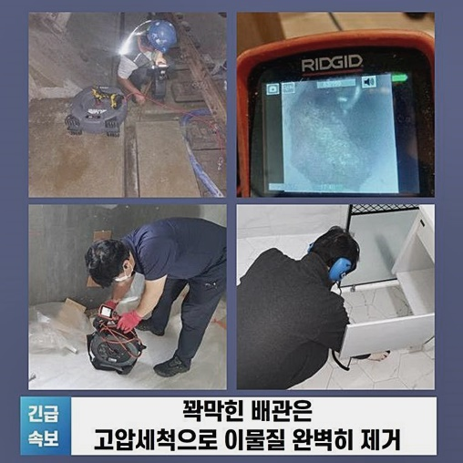
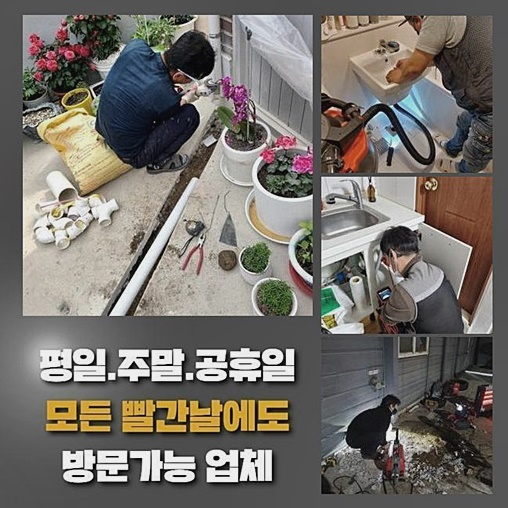
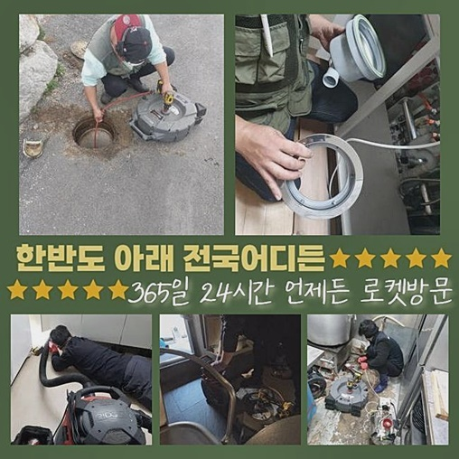
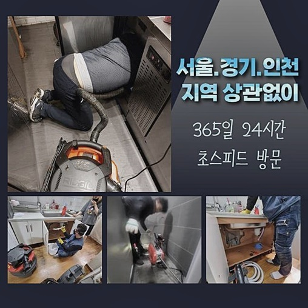
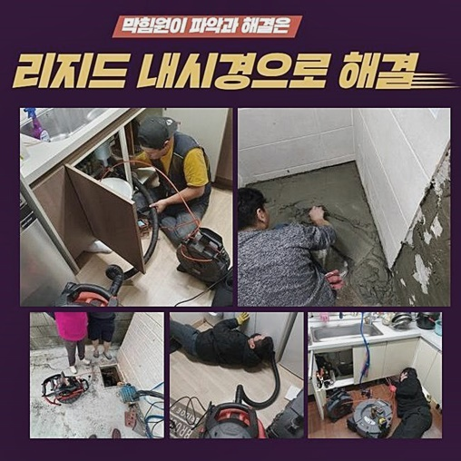
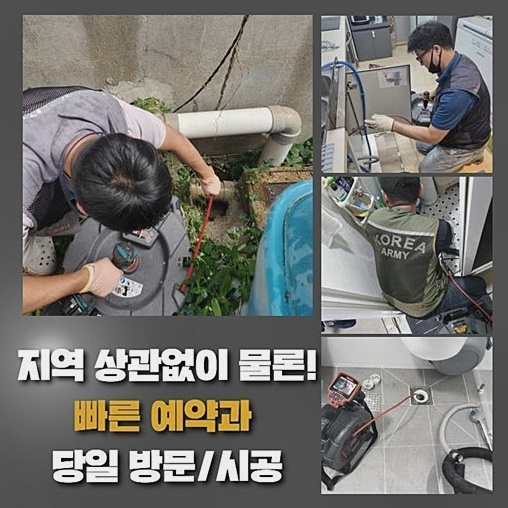
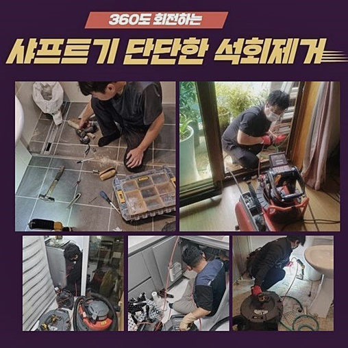

🏠 구로구 오류동변기역류 고척동 하수구뚫어주는곳 부속수리
용인시 처인구 배관막힘 전문 시공 후기

📋 작업 개요
- 위치: 용인시 처인구, 수원시 영통구, 화성시 동탄
- 서비스 유형: 배관막힘, 누수수리, 고압세척, 내시경점검
- 작업 일시:
- 업체명: 하수구수사대 (010-5615-2118)
🔍 문제 상황
구로구 오류동변기역류 고척동 하수구뚫어주는곳 부속수리
얼마전 달려갔던 배수오류 장소에선 구조 시공을 하시고 계셨는데 곳곳을 살피니 하수관은 바깥으로 배출된 까닭에 점검을 함에 있어선 난항은 없는 상태였어요
원인의 경우 안쪽라인과 메인관로가 접촉된 위치에서 발발했어요
배수관들의 접촉부에 잔해들이 쌓이게되어 통수가 불가해 증상들이 발생된 것입니다
안전하게 문제들을 해결하고자 내시경장비를 이용한 다음 잔해의 누적된 위치들과 확인하고 세척들을 실시해주었습니다
저희의 경우 내시경기기를 이용해서 정확하게 된 원인규명을 실시하고 이것으로 배수관을 뚫어드려요
전반적인 세척에 대하여 디테일한 요소가 궁금하다면 저희업체에게 문의해보세요
황급히 도움을 요청하시어 고객님 댁으로 신속히 방문드렸습니다
고객님에게 불편 상황들에 관해 많은 내용들을 전해들었죠
그렇지만 증세가 나타난지 긴 기간이 지났었죠 덧붙여 가게들도 밀집해있어서 애로사항이 늘어난 곳도 보였습니다
건물에서 수도사용이 안되는것을 넘어서 건축물의 막히는 증상으로 이러지도 저러지도 못하는 상황이였어요
물이 안빠지는 사태는 판매량과도 연관이 지대해서 신속한 청소가 중요했죠
하수구막힘 원인들은 구조라던가 내식성과 관련한 것 등 다양한 이유로 발발합니다
위와같은 사안으로 인하여 시발점을 특정하는 때도 이런저런 요소들을 고려해야합니다 확실한 시작점을 신속히 발견했는데 외부라인의 배수관인 것으로 밝혀졌어요

🔎 원인 분석
💡 전문가 진단: 정밀 진단 장비를 사용하여 슬러지의 고착 여부를 판명하고 타격/세척 작업을 실시했습니다.
관로나 관련 시설에서 생겨나는 배수오류는 생겨나는 지점도 많은데요
상담과 관련된 통화를 하고 내방해보면 가정과 공공기관과 같은 문제되는 곳이 정말 많아요
증상도 특정할 수 없는게 수많은 원인들이 난무한 물 안빠짐 문제이므로 전문업체의 절차를 밟지 않고서는 수리하는것이 어렵죠
간혹 수돗물이 흐르지를 못해 주위에서 구매가능한 클리너등의 용품들을 사용하신 적이 있으실거에요 필히 해당 방법이 잘못된 방법이다 라고 아니며 문제들이 심상치않다면 의도치않게 해결들이 늦춰질 수 있습니다
스스로의 힘으로도 안될땐 맘편히 도움을 청할 전문진이 필요할테죠
저희들은 평일이 아니더라도 연휴라도 방문드립니다
도움을 청하시면 곧바로 내방하기에 지리적 환경에 제약이 없답니다
오전부터 밤이 되어도 부르시면 달려갑니다
내부를 살피니 이물질의 누적률들이 저조해 석션장비로 무리없이 흡입했어요
갑자기 화장실내부서 역류해버리는 문제가 발발해 의뢰자께서 말씀을 전하셨어요
바닥쪽은 고압 석션장비로 원활하게 이물제거를 실시해주었고 오차없이 진행시켰어요
문제의 욕실쪽으로 이동하여 내시경을 꺼내 바깥쪽까지 관찰했습니다
곳곳을 살피니 누적된 위치를 신속히 특정하여 증세를 손 봐 주었고 배수관의 안쪽까지 점검하니 심한 상태들을 볼 수 있었답니다
덧붙여 이 곳에서도 냄새까지 발생되었던 모습이었기에 겉으로 보아도 오염된 모습을 알았는데요

🔧 작업 과정
일단 아래 매립된 설비의 청소를 해주기 위해서 내시경까지 동원하여 세척을 이어가고 바깥으로 이동하여 더욱 확실한 확인들을 해보고자 내시경장비를 사용했습니다
생각한대로 하수관 속에는 많은 잔여물이 축적된 형상을 관찰했죠
이를 기초하여 증상들을 타파할 목적으로 적합한 작업 방식의 계획들을 잡았습니다
의뢰인에게도 이러한 상태를 말씀드리고 빠르게 샤프트장비의 가용을 이어갔습니다
해당 장비의 경우 체인들을 곧이어 회전시켜 딱딱한 이물을 사라지게하는 기능을 하죠
저희의 전문가들은 내시경 투입과 같이 분쇄도 해주기 위해서 각 지지 않은 사슬들로 바꿔주었어요
이처럼 샤프트기기 사용을 진행시키니 상당수의 찌꺼기들이 벽면쪽에서 제거되기 수행했죠
여지껏 관리하지 않았던 공간인 탓에 수월한 작업이 순항이지만은 않았습니다
샤프트기기로 굳어진 이물들을 분쇄해주고 석션장치로 이물들을 흡입시켜 하수관을 시원하게 복구하기 시작했어요
그저 초반부들만 해결하면 다시금 배수관정체 증세가 불거질것입니다
이같이 문제들을 찾는게 1순위이기에 저희업체에선 제대로 증상기조를 바로 잡지 않는다면 금액을 청구하지 않죠
이런 정책은 고객분과의 약속으로 안전성을 바탕으로 수리를 진행해요
고객분들도 수리가 안되는 상황들에 비용지불과 관련된 손해들을 감수할 필요가 없습니다
내시경장치로 관찰하니 깊은 지점에 상당한 기름성분이 누적된 상태였습니다
각 라인에 자리잡은 이물들은 시간들이 흐르면서 굳는 특징이 있는데요
간소하게 시중 제품으론 제대로 제거시키는게 힘들기에 고차원의 방법을 사용해야해요
서둘러 석션기기를 꺼내어 흡입시켜 부유물들까지 제거해냈습니다
고객께서도 위와같이 엄청 많은 오염물이 쌓이게되었는지 생각을 못했다고 놀란 기색이 역력했죠
다행히도 누수증세들은 보이지 않았으나 지금 상태로 방임적인 태도로 일관했다면 불편들이 이만저만이 아니였을겁니다
석션운용으로 잔해들을 걷어내고 내시경장비로 확인한 결과 통수 공간들이 어렴풋이 보였습니다
혹시라도 같은 증상이 재발할지라도 염려할 일 없으십니다
저희업체에선 1년에 걸쳐 무상보증을 지원합니다
저희전문가가 수리한 뒤에 똑같이 재발하면 비용이 들지않고 AS들을 진행해요


✅ 작업 완료
이전의 수리와 다를것없이 전문진과 기계로 재수리하니 걱정말고 연락해주세요
주위의 이물까지 완전하게 처리하며 주변도 문제없이 석션기기로 청소해주었어요
하수도나 연관된 설비들은 외부에서 시작된 문제들도 있겠으나 관리부재로 인해 악영향들로 흘러갈 여지가 대부분입니다
배수 관련 사안을 문제에 대해 인식하고 쓴다면 배수관의 높은 컨디션을 바로 잡으실 수 있습니다
고객분의 입장에서 시도가능한 예방법들과 조심해야되는 부분들도 하나하나 안내했는데요
이와 유사한 문제들을 겪는 고객분들이 있으시면 상담을 진행해보세요!




⚠️ 하수구 배관 막힘 예방 및 관리 가이드
- ✅ 머리카락, 비닐, 물티슈 등 물에 분해되지 않는 이물질은 절대 흘려보내지 마세요.
- ✅ 기름기 많은 식기는 설거지 전 키친타올로 먼저 기름때를 닦아내세요.
- ✅ 주기적으로 배수구에 뜨거운 물을 가득 부어주어 유지방 고착을 방지하세요.
- ✅ 작업 후 1년 이내 재발 시 무상 A/S 보증 서비스를 제공합니다.
💡 핵심 정리
- 확실한 장비 작업(내시경 점검 및 샤프트 스케일링)으로 원인을 뿌리 뽑습니다.
- 작업 후 1년 이내에 동일한 부위 재발 시 100% 무상 A/S 서비스를 보장합니다.
- 서울 · 경기 · 인천 전 지역에 24시간 언제든 긴급 출동할 수 있도록 항시 대기 중입니다.
❓ 자주 묻는 질문 (FAQ)
🚨 용인시 처인구 배관막힘 문제로 고민이신가요?
정확한 원인 진단과 확실한 시공으로 재발 없는 해결을 약속드립니다.
24시간 긴급 출동 | 서울 · 경기 · 인천 전지역 | 1년 내 재발 시 무상 A/S